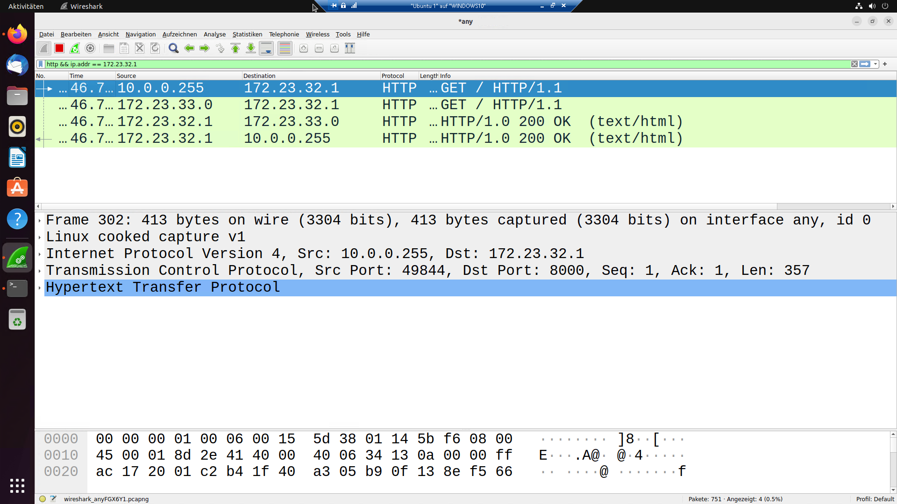

IT-Technik Netzwerkgrundlagen
Der Hauptgrund für den Einsatz von NAT besteht darin, dass aufgrund der Knappheit von IPv4-Addressen lokale Netzwerke in privaten Adressräumen (10.0.0.0/8, 172.16.0.0/12, 192.168.0.0/16) betrieben werden. Diese Adressen sind aber nicht im Internet routebar.
NAT löst dieses Problem, indem am Internet-Router in jedem Datenpaket die IP-Adresse des internen Rechners durch seine eigene ersetzt.
Bei der Antwort wird dieser Vorgang umgekehrt.
Es gibt zwei Formen des NAT. Wollen interne Rechner auf Dienste im Internet zugreifen, wird SNAT verwendet. Dabei wird die Quell-IP durch die des Routers ersetzt. Sie bleibt so gegenüber dem Internet verborgen, daher nennt man dies auch Masquerading.

Abbildung 1: HTTP Verbindung mit SNAT (Masquerading)
Die zweite Form dient dazu bestimmte Dienste (auf bestimmten Ports) auf Rechnern im privaten Adressraum von außen zugänglich zu machen.
Dazu werden Datenpakete anhand des Zielports an Rechner im internen Netz weitergeleitet und die Ziel-IP ersetzt. Dies nennt sich DNAT oder Port-Forwarding
Die Manipulation der IP-Header durch den Router ist problematisch, da dies
IPv6 schafft hier Abhilfe indem jedes Gerät im internen Netz eine global routbare Addresse bekommen kann.
Auch wenn es bei der Nutzung von IPv6 nicht nötig ist NAT einzusetzen ist es möglich und unter verschiedenen Umständen sinnvoll.
So macht es NAT möglich mehrere Rechner unter einer IP erreichbar zu machen. Dies kann zur Lastverteilung genutzt werden.